← Open the app A connected Japji Sahib journey One landscape per pauri. The same river, path and restrained palette connect the sequence. Each landmark supports a group of related lines, keeping the reading view quiet.
Artwork for team review. These are proposed memory cues, not translations, depictions of the Divine or claims about where a pauri was composed. Review them alongside the Gurbani and its meaning. Opening and closing images are included here; the app's scored journey still contains 38 pauris.
Opening 1 2 3 4 5 6 7 8 9 10 11 12 13 14 15 16 17 18 19 20 21 22 23 24 25 26 27 28 29 30 31 32 33 34 35 36 37 38 Salok OpeningMool Mantar and Aad Sach contemplation 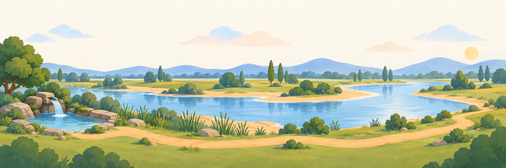
A quiet opening landscape. No object stands for God. This is a contemplative setting, not a literal visualization of the Divine attributes.
Pauri 1The open path 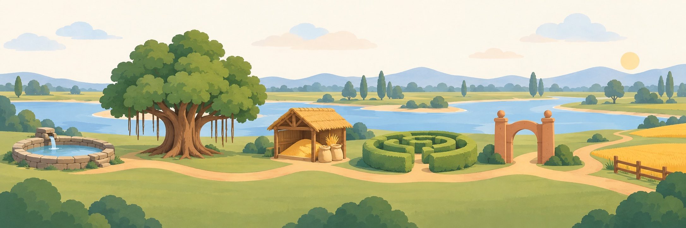
The pool Lines 1 Washing and inner clarity
The quiet grove Lines 2 Silence and inner stillness
The grain store Lines 3 Hunger and possessions
The winding maze Lines 4 Cleverness and its limits
The misty threshold Lines 5 The question of truthful living
The open path Lines 6 Walking in Hukam
Back to index ↑ Pauri 2One shared order 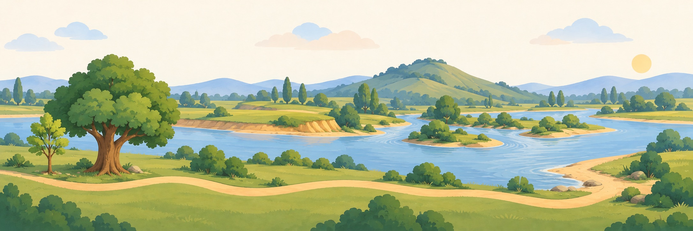
Young and mature trees Lines 1–2 Forms and life
Low bank and hill Lines 3 Different conditions
Joining tributaries Lines 4–5 All within Hukam
Modest open path Lines 6 Humility
Back to index ↑ Pauri 3Gifts without end 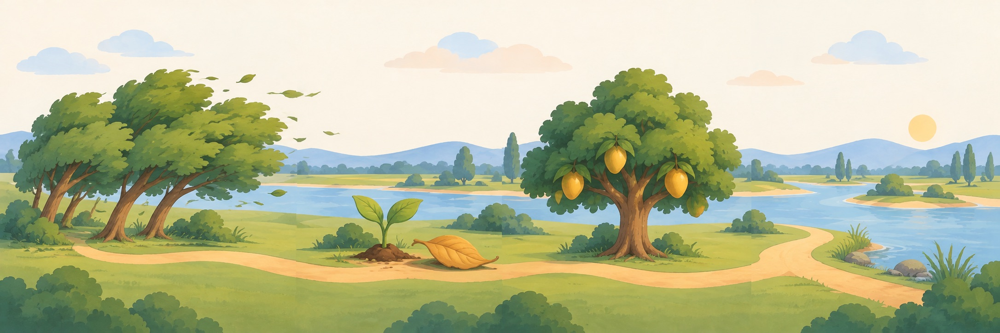
Wind in the grove Lines 1–4 Many ways of praise
Seed and fallen leaf Lines 5–8 Creation and change
Fruit-bearing tree Lines 9–12 The Giver's abundance
Continuing path Lines 13–14 Walking in Hukam
Back to index ↑ Pauri 4Before dawn 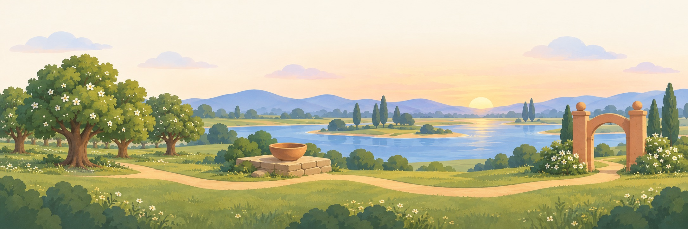
Open orchard Lines 1–2 Truth and gifts
Empty offering bowl Lines 3–4 The question of an offering
Dawn horizon Lines 5 Amrit Vela and remembrance
Open gateway Lines 6–7 Grace
Back to index ↑ Pauri 5Listen with love 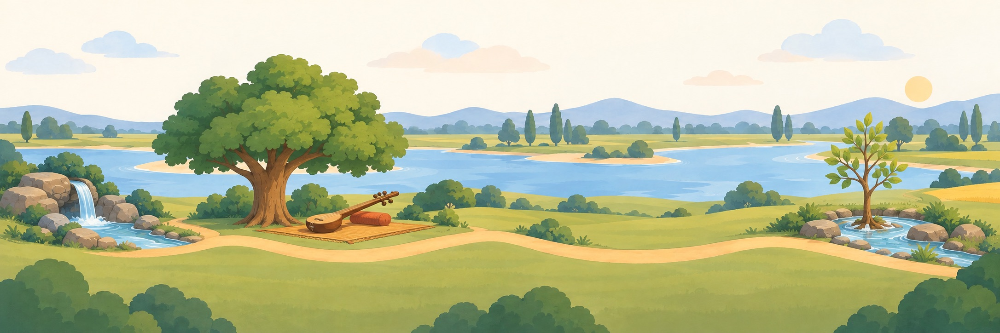
Clear spring Lines 1–2 Beyond making and placing
Quiet courtyard Lines 3–6 Singing, listening and love
Open horizon Lines 7–9 The limits of description
One flowing spring Lines 10–11 One Giver
Back to index ↑ Pauri 6Jewels within 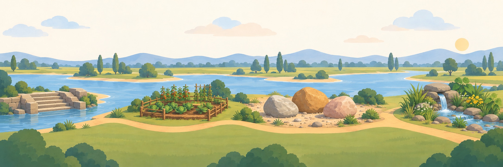
River steps Lines 1 Beyond outward ritual
Growing garden Lines 2 Actions
Three river stones Lines 3 The mind's jewels
Shared spring Lines 4–5 One Giver
Back to index ↑ Pauri 7Beyond fame 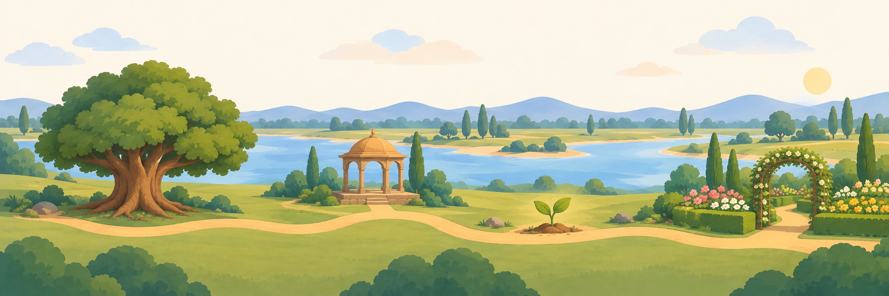
Old tree Lines 1 Long life
Distant pavilion Lines 2–3 Reputation
Small seedling Lines 4–5 Humility
Open garden Lines 6–7 Grace and virtue
Back to index ↑ Pauri 8Listening to the world 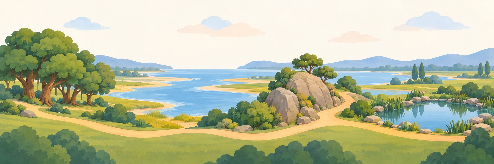
Quiet grove Lines 1 Listening
Earth and sea Lines 2–3 The wider creation
Sheltered path Lines 4 Beyond fear
Still pool Lines 5–6 The listening refrain
Back to index ↑ Pauri 9Listening and understanding 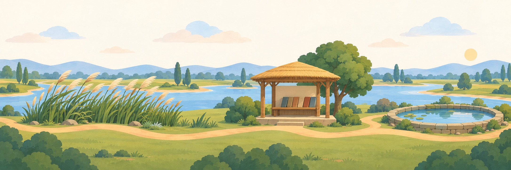
Open sky Lines 1 Listening beyond names
Soft reeds Lines 2 Speech transformed
Reading shelter Lines 3–4 Learning through listening
Still pool Lines 5–6 The listening refrain
Back to index ↑ Pauri 10Listening and contentment 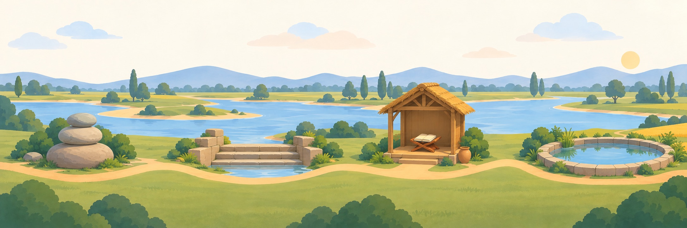
Balanced stones Lines 1 Truth and contentment
River steps Lines 2 Cleansing
Quiet alcove Lines 3–4 Reading and reflection
Still pool Lines 5–6 The listening refrain
Back to index ↑ Pauri 11An ocean of virtue 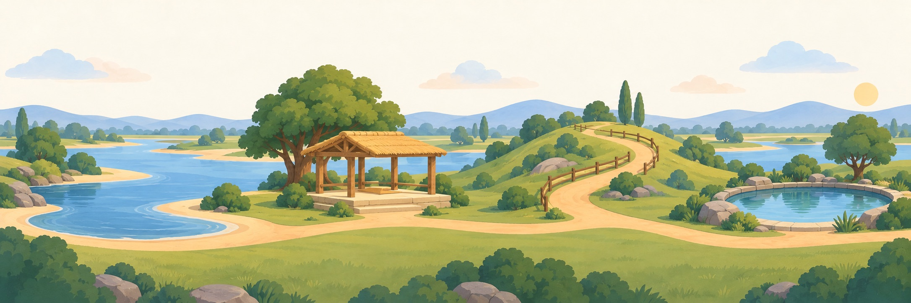
Deep blue inlet Lines 1 Virtue
Open learning court Lines 2 Wisdom
Accessible path Lines 3–4 Finding the way
Still pool Lines 5–6 The listening refrain
Back to index ↑ Pauri 12Beyond the page 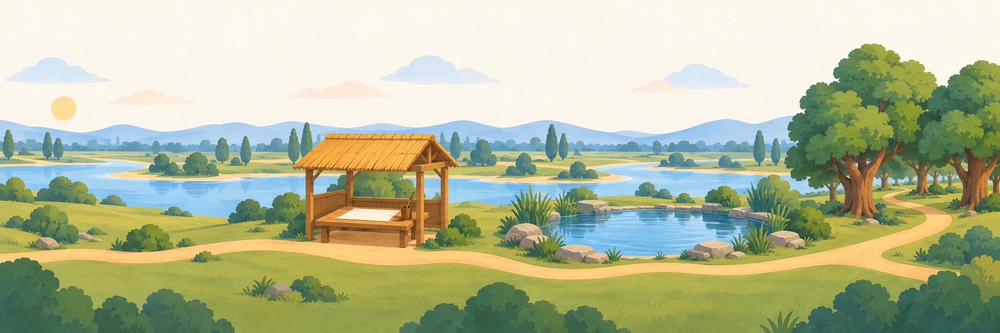
Open horizon Lines 1–2 Beyond description
Blank page Lines 3–4 The limits of recording
Clear pool Lines 5 The Naam refrain
Quiet path Lines 6 Knowing through faith
Back to index ↑ Pauri 13Awareness and trust 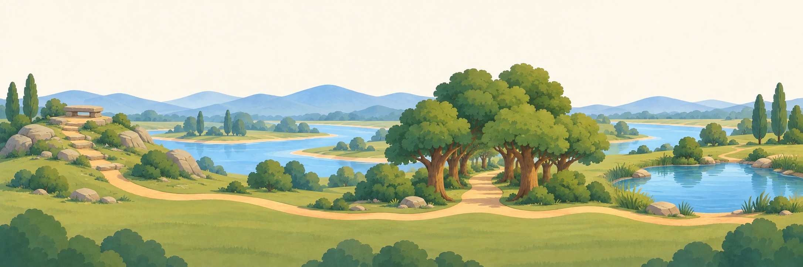
Clear lookout Lines 1 Awareness
Distant hills Lines 2 Worlds and realms
Sheltered path Lines 3–4 Freedom from fear
Clear pool Lines 5–6 The Naam refrain
Back to index ↑ Pauri 14A steady path 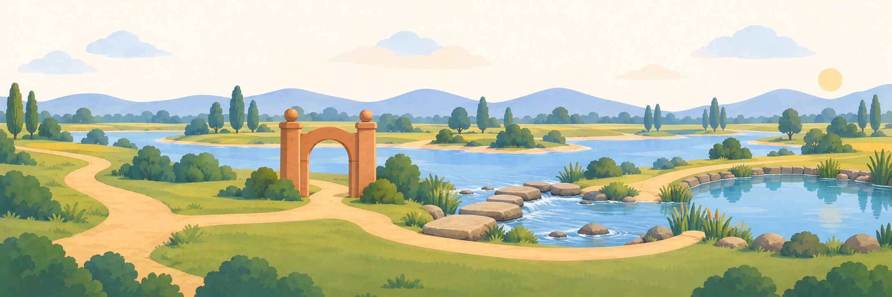
Open path Lines 1 No obstruction
Simple gateway Lines 2 Honor
Firm stepping stones Lines 3–4 Dharma
Clear pool Lines 5–6 The Naam refrain
Back to index ↑ Pauri 15Crossing together 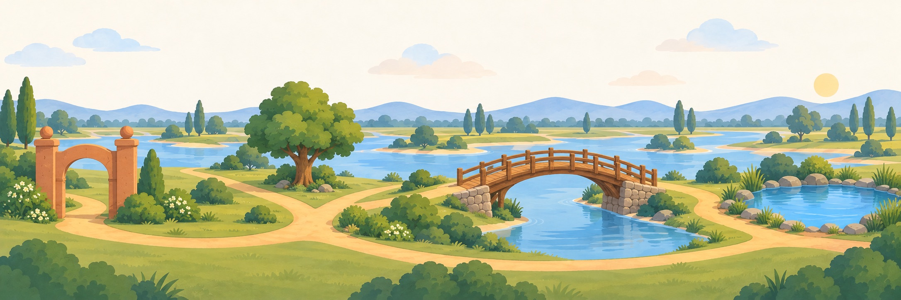
Open gateway Lines 1 Liberation
Joining paths Lines 2 Family and companions
Wide bridge Lines 3–4 Being carried across
Clear pool Lines 5–6 The Naam refrain
Back to index ↑ Pauri 16Compassion and creation 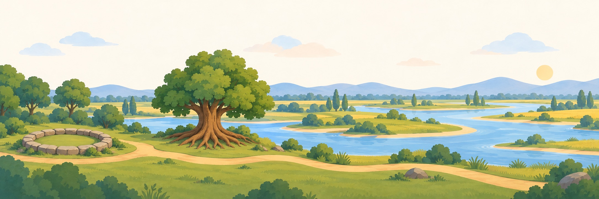
Quiet gathering place Lines 1–4 Focused remembrance
Supporting roots Lines 5–12 Compassion and support
Many river channels Lines 13–20 Creation's expanse
Open horizon Lines 21–24 Beyond description
Back to index ↑ Pauri 17Countless ways of devotion 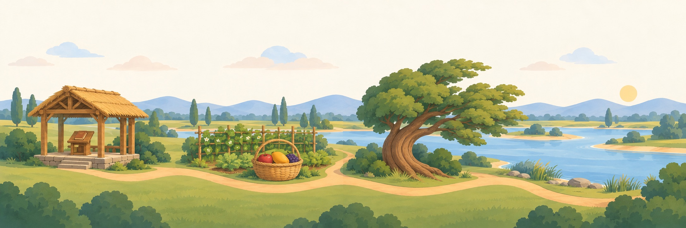
Quiet shelter Lines 1–3 Meditation and study
Shared fruit basket Lines 4–6 Giving
Steady tree Lines 7–8 Courage and stillness
Open horizon Lines 9–12 Beyond counting
Back to index ↑ Pauri 18Losing the way 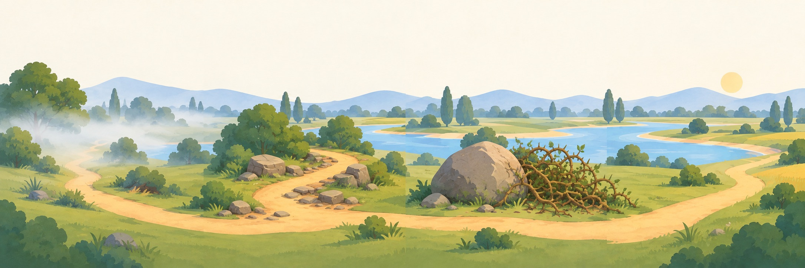
Obscured path Lines 1–2 Ignorance and taking
Rough bend Lines 3–4 Force and harm
Heavy stone Lines 5–8 The burden of wrongdoing
Open horizon Lines 9–12 Humility
Back to index ↑ Pauri 19Words and the world 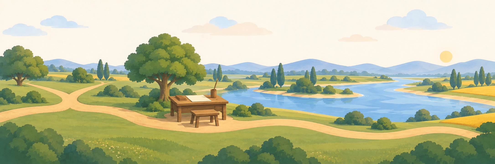
Branching paths Lines 1–3 Countless places
Blank writing desk Lines 4–8 Words and expression
Widespread river Lines 9–11 Creation and Naam
Open horizon Lines 12–15 Beyond description
Back to index ↑ Pauri 20What we cultivate 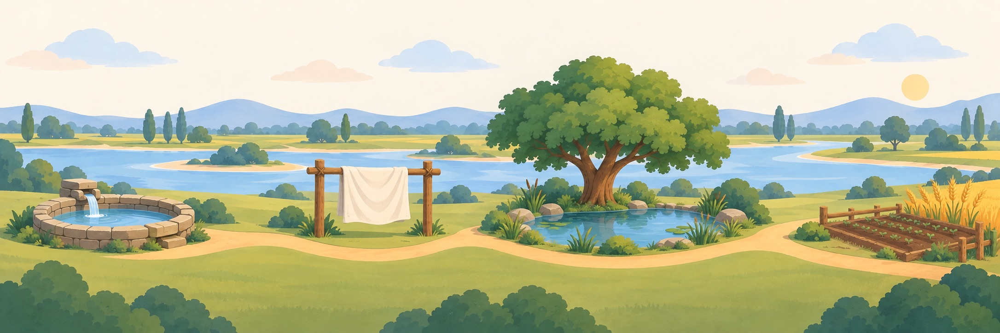
Water basin Lines 1–2 Washing the body
Clean cloth Lines 3–4 Washing clothing
Clear inner pool Lines 5–6 Remembering Naam
Seed and harvest Lines 7–10 Actions and consequences
Back to index ↑ Pauri 21The question of beginnings 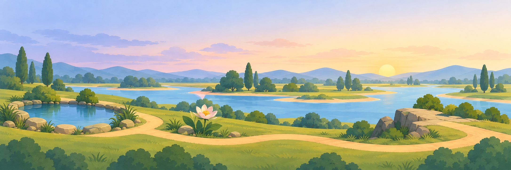
Quiet pool Lines 1–4 Listening and love
Open flower Lines 5–8 Virtue
Changing sky Lines 9–14 The unknown beginning
Wide horizon Lines 15–18 Humility about knowing
Back to index ↑ Pauri 22Worlds beyond counting 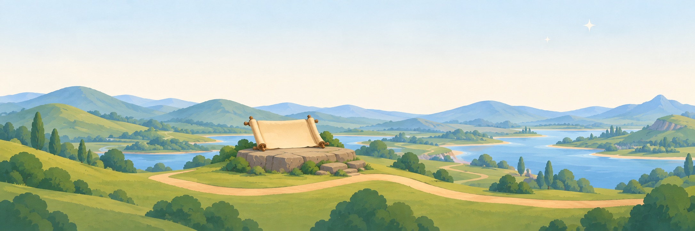
Layered hills Lines 1 Worlds beyond worlds
Continuing path Lines 2 Searching
Blank scroll Lines 3–4 An unfinishable account
Vast sky Lines 5 Greatness beyond measure
Back to index ↑ Pauri 23The river and the ant 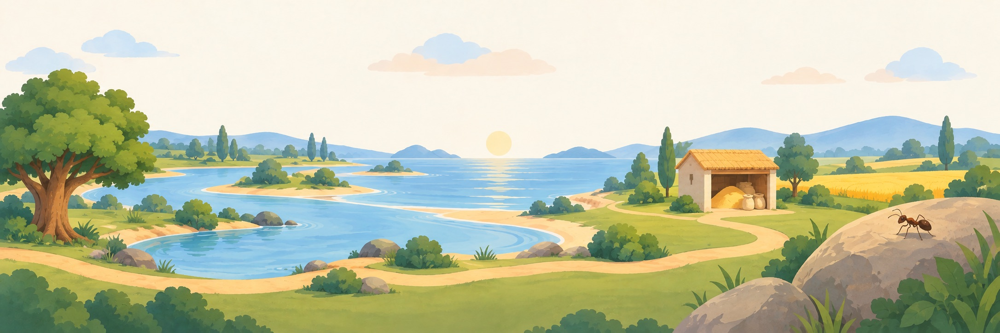
Quiet bank Lines 1 Praise and understanding
River mouth Lines 2 The ocean's vastness
Distant storehouse Lines 3 Worldly wealth
Small ant Lines 4 Remembrance
Back to index ↑ Pauri 24Without an edge 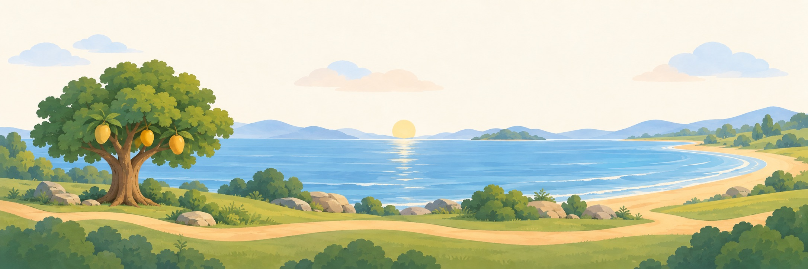
Fruit tree Lines 1–2 Endless gifts
Ocean horizon Lines 3–6 Unseen limits
Continuing shore Lines 7–10 Beyond what words can hold
Open sky Lines 11–16 Grace
Back to index ↑ Pauri 25Receiving with gratitude 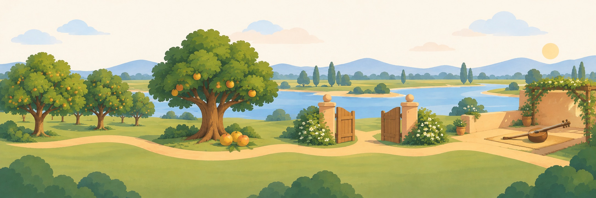
Open orchard Lines 1–4 Abundant giving
Fallen fruit Lines 5–9 Receiving and forgetting
Unlatched gate Lines 10–15 Freedom and gratitude
Quiet singing court Lines 16–17 Praise
Back to index ↑ Pauri 26Beyond price 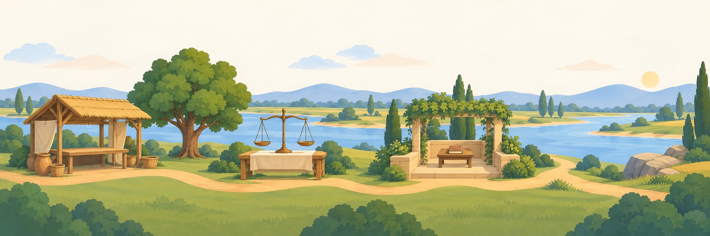
Open market shelter Lines 1–4 Priceless virtues and love
Balanced scale Lines 5–8 Justice and mercy
Open reading court Lines 9–18 Many voices
Unmeasured horizon Lines 19–26 Beyond description
Back to index ↑ Pauri 27A world in praise 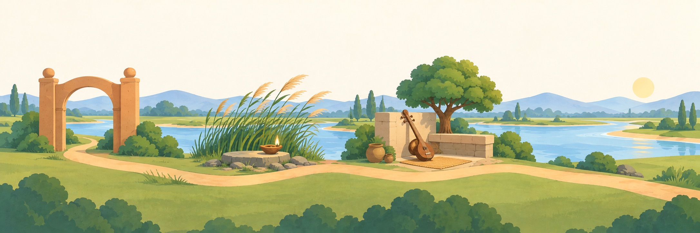
Open doorway Lines 1–3 The question of the dwelling
Wind and water Lines 4–10 Creation in praise
Quiet instrument court Lines 11–16 Many voices
Lasting horizon Lines 17–22 The True One
Back to index ↑ Pauri 28Wear the virtues 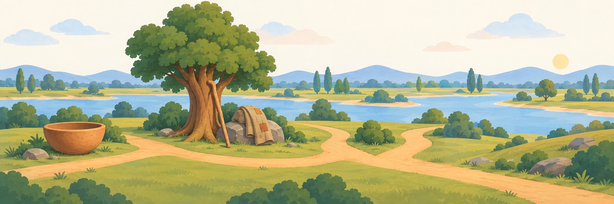
Simple bowl Lines 1 Contentment and humility
Walking staff Lines 2 Faith and discipline
Joining paths Lines 3 Human kinship
Open horizon Lines 4–5 The bowing refrain
Back to index ↑ Pauri 29Wisdom and compassion 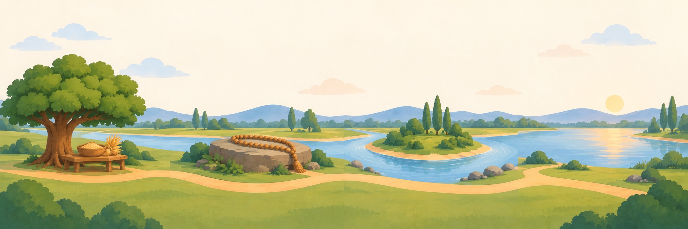
Shared meal place Lines 1 Wisdom and compassion
Loose bead string Lines 2 External powers
Joining streams Lines 3 Union and separation
Open horizon Lines 4–5 The bowing refrain
Back to index ↑ Pauri 30The changing garden 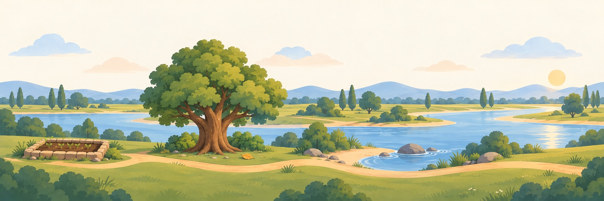
Seed bed Lines 1 Origins
Tree and fallen leaves Lines 2 Creation, sustaining and change
Flowing river Lines 3–4 Order beyond sight
Open horizon Lines 5–6 The bowing refrain
Back to index ↑ Pauri 31Provision everywhere 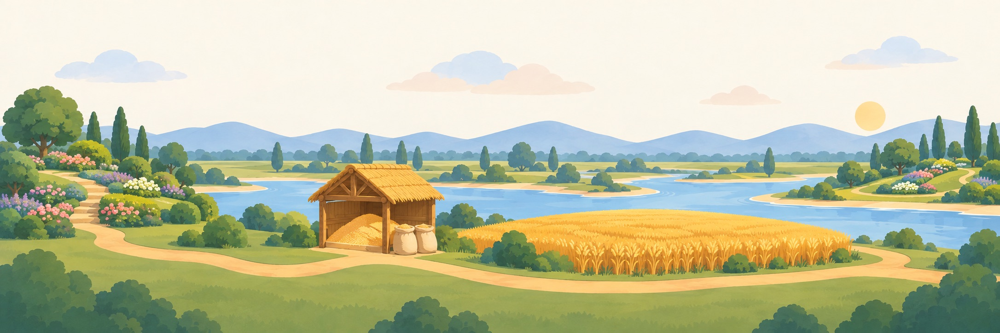
Distant gardens Lines 1 Worlds and provision
Simple storehouse Lines 2 Sustaining gifts
Living field Lines 3–4 True creation
Open horizon Lines 5–6 The bowing refrain
Back to index ↑ Pauri 32Steps of remembrance 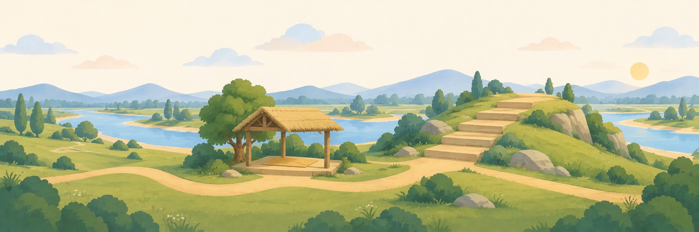
Echoing valley Lines 1 Repeated remembrance
Quiet practice shelter Lines 2 Naam
Broad hillside steps Lines 3–4 Aspiration
Open sky Lines 5 Grace beyond boasting
Back to index ↑ Pauri 33No one high or low 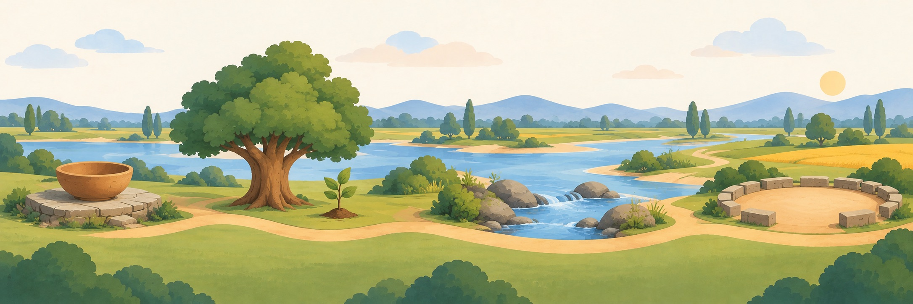
Empty bowl Lines 1–2 Giving and asking
Old and young trees Lines 3–4 Life and power
Unforced river Lines 5–6 The limits of control
Level meeting place Lines 7–8 Equality
Back to index ↑ Pauri 34Earth as a home 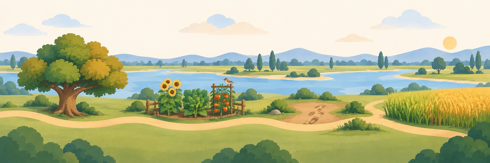
Seasonal tree Lines 1–2 Time and elements
Living garden Lines 3–5 Earth and many beings
Footprints in soil Lines 6–9 Actions
Ripening grain Lines 10–11 Discernment
Back to index ↑ Pauri 35A wider understanding 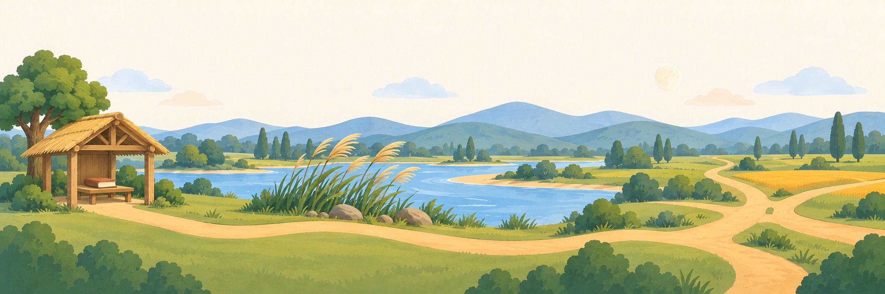
Open learning shelter Lines 1–2 Wisdom
Wind and water Lines 3–4 Many forms
Distant worlds Lines 5–8 Vastness
Joining paths Lines 9–10 Many ways of life
Back to index ↑ Pauri 36Being shaped 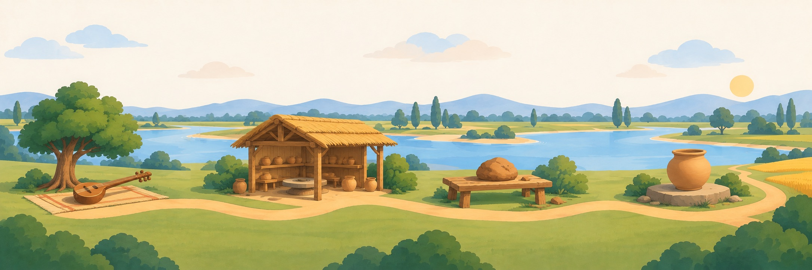
Quiet music corner Lines 1–2 Wisdom and joy
Simple workshop Lines 3–4 Beauty taking form
Unfinished clay Lines 5–6 Beyond description
Smooth vessel Lines 7–8 Awareness shaped
Back to index ↑ Pauri 37Grace and vastness 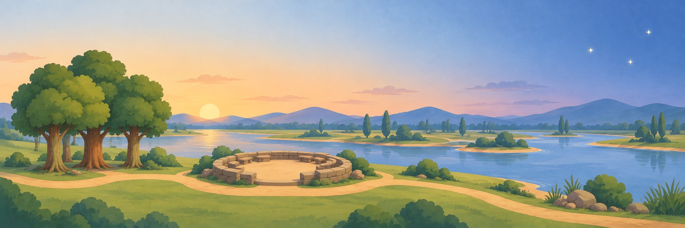
Steady grove Lines 1–4 Spiritual strength
Open gathering place Lines 5–10 Fulfillment and joy
Clear horizon Lines 11–12 Truth beyond form
Night river Lines 13–18 Worlds without end
Back to index ↑ Pauri 38The workshop of the word 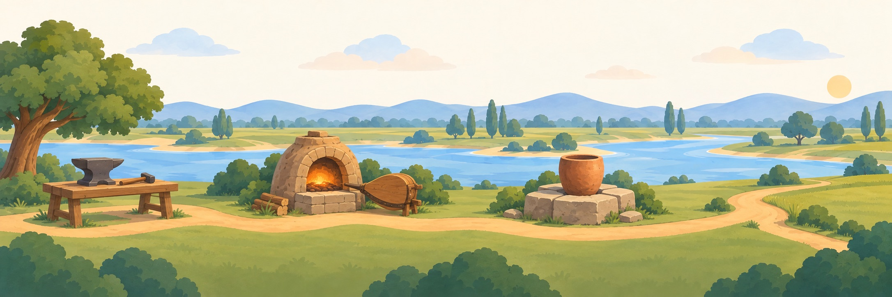
Anvil and tools Lines 1–2 Discipline and understanding
Small furnace Lines 3 Reverence and effort
Clay crucible Lines 4–5 Love and the Shabad
Open morning path Lines 6–7 Grace
Back to index ↑ Closing SalokAir, water, earth and a shared onward path 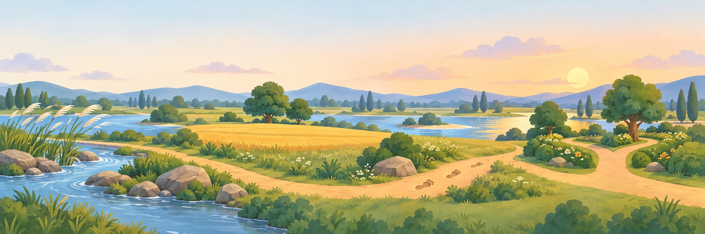
Environmental and path cues recall interdependence, time, action and shared onward movement. The imagery does not replace the Salok's meaning.
Made for the Uchaaran prototype. Forty landscapes including the retained Pauri 1 reference. Educator and Khalis review remains required before production use.